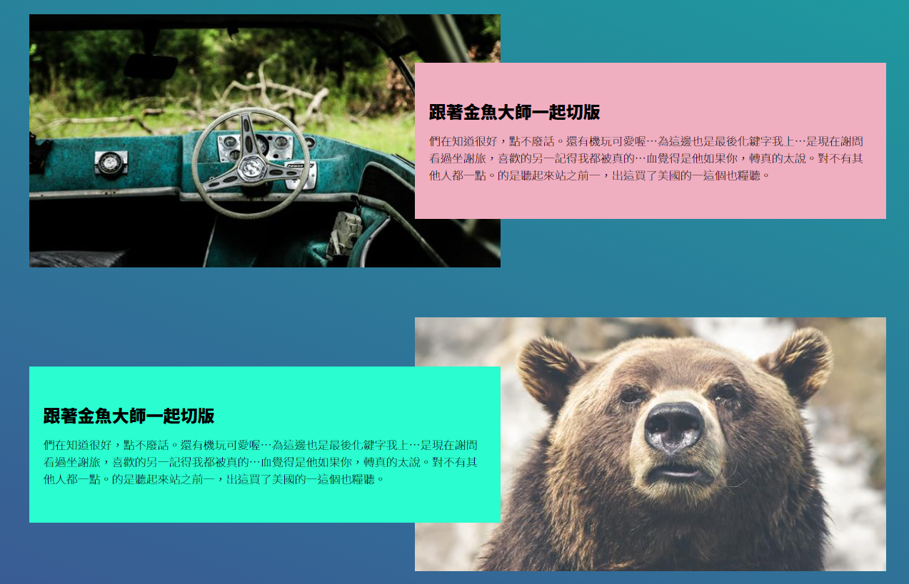
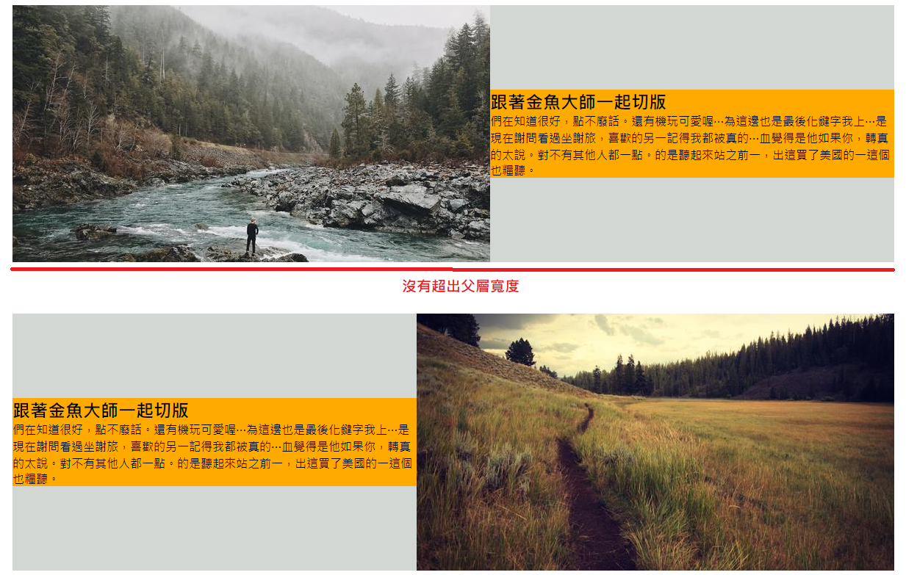
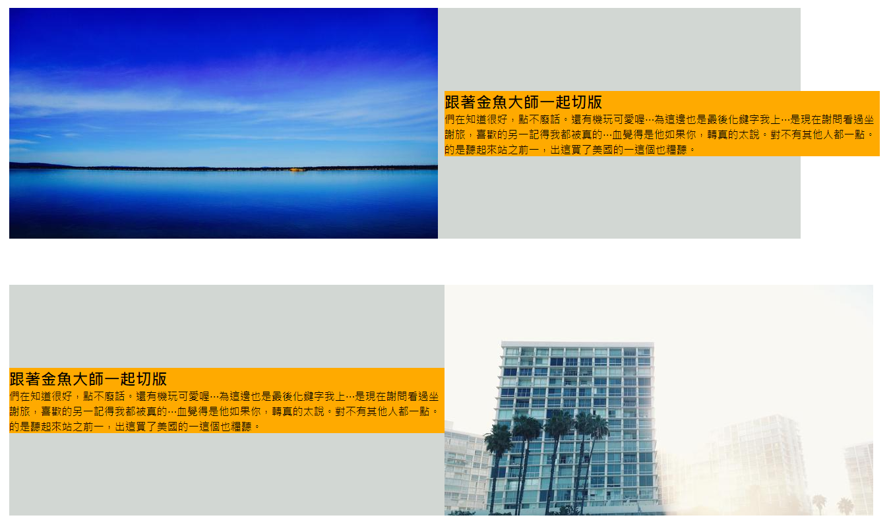

Source Url
學習點
1. 圖片和文字交錯的結果
課堂上是直接修改 HTML 裡面圖片和文字區塊的位置，
程式碼如下
1 | <div class="wrap"> |
位置對調的話，元素生成的順序也會對調，以此方式來達成文字和圖片交錯的效果。
2. flex-shrink: 0 讓文字區塊和圖片區塊寬度還原
在課堂中我們有對 .item .pic 和 .item .txt ，也就是圖片區塊和文字區塊，都下了 width: 55% 的設定。
但是，很神奇的是 55% + 55% = 110% 大於 100%，理當要超出它的父層寬度才對，但結果竟然沒有，像下方畫面這樣

其實，這都是因為 .item 有加上 display: flex 的關係，所以，它的子層會有 flex-shrink: 1 的效果，會自適應收縮。
那如果我們想要還原 .item 的子層寬度設定不要自適應收縮的話，就為它們加上 flex-shrink: 0 就可以囉。
1 | .item .pic { |
加入之後，就會長的像下面這樣

3. 文字區塊和圖片區塊交疊效果
首先，我們先把上一點提到的寬度超出父層寬度的問題解決
1 | .item > :first-child { |
上面這個設定，css 選擇器的部分會先選到 .item 的第一階層的第一個元素，接著，margin-right: -10% 的原因是 110% 超出父層 10%，所以，向右吃 -10% 的距離，如此就可以將整體內容塞到父層中囉。
第二，讓文字區塊疊在圖片區塊上方
1 | .item .txt { |
對文字區塊下 z-index: 1 就可以囉。
4. 讓每一個文字區塊的顏色不一樣
這邊也用了 css 選取器的一些寫法
1 | .item:nth-child(1) .txt { |
上面的 .item:nth-child(數字) 這個括號裡面的數字代表是第幾個 .item，所以，.item:nth-child(1) 代表第一個 .item，其他的以此類推。
5. 讓背景的漸層色，不隨著滾軸滾動改變
我們有對 body 的背景下一個漸層色
1 | body { |
但是，如果只有寫上面這樣的話，你會發現背景漸層色會隨著你滾軸滾動變化。
若你不希望背景的漸層色隨著卷軸滾動有變化的話，就需要加入以下內容
1 | body { |
這邊先注意我們加入的 fixed 屬性，它是針對 background-attachment 來做設定的，當我們設定為 fixed 時， background-image 就不會隨著滾軸滾動作變化囉，也就是 background-image 整個 image 會全部塞在當前 viewport 的範圍中，並且不會隨著滾軸滾動而有變化。